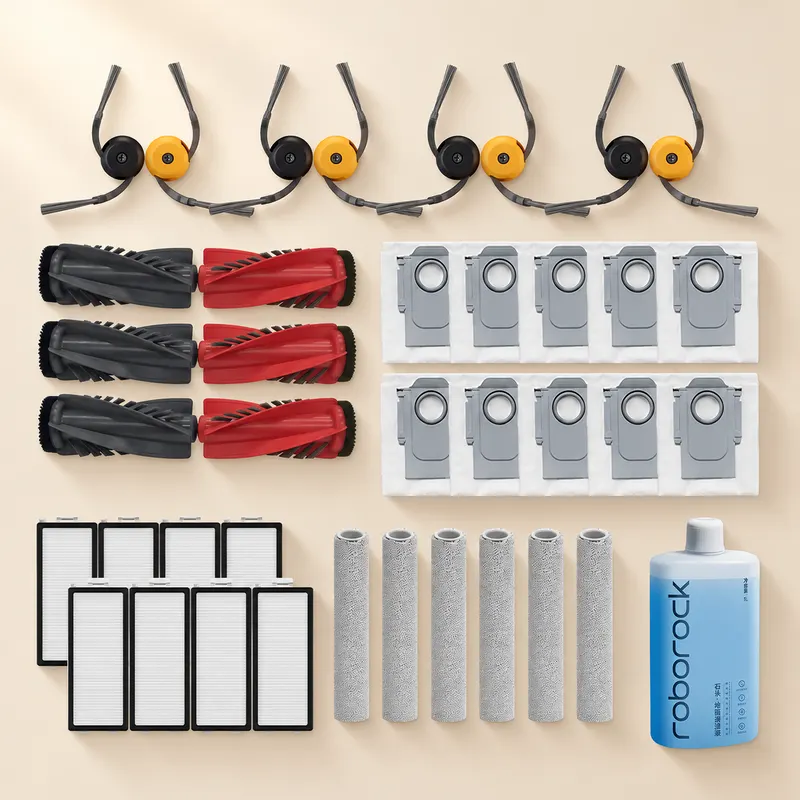

로보락 (Roborock)
로보락 Q Revo Curv 2 Flow 1년 세트 구성과 롤러 물걸레·브러시 관리법
글·구성: 제이상점 · 기종별 소모품 규격·호환·유지비 요약본 (실물 구성 예시 사진과 상세 후기는 아래 네이버 블로그 모바일 원문에서 보실 수 있습니다.)

핵심 관리 · 선택 체크포인트
- 로보락 Q Revo Curv 2 Flow는 2분할 원추형 메인브러시와 원통형 롤러 물걸레 구조를 사용해 일반 원형 패드 모델과 소모품 형태가 다릅니다.
- 베란다 건조 매트에서 롤러 물걸레와 필터를 말리는 순서: 원통형 롤러 물걸레 슬리브와 물세척한 먼지통 필터는 통풍이 잘되는 베란다
- 1년 패키지 구성품과 기종별 옵션 확인표: 세탁실 선반 수납함에 더스트백·사이드브러시·필터·롤러 물걸레를 칸칸이 나누어 보관해 두면 교체 주기가 되었을 때 필요한 부품을 바로 꺼내 쓸 수 있습니다.
- 도크 옆 수납함과 싱크대 세척 동선을 함께 정돈하기: 거실 도크 옆 원목 트레이에 전용 클리너와 여분 더스트백·롤러 물걸레를 가까이 두면 급수나 먼지통 점검 때 동선이 짧아집니다.
- 세트 구성 비교와 필터 건조 기준도 함께 확인해 보세요: 세제 포함·미포함 세트를 고르는 기준은 소모품 세트 세제 포함·미포함 선택 기준에서, 물세척 후 필터를 말릴 때 주의할 점은 필터 세척 후 24시간 건조·재장착 안내에서 살펴보실 수 있습니다.
부품 규격 · 점검 기준표
| 확인 항목 | 부품·옵션 특징 | 점검·선택 포인트 |
|---|---|---|
| 메인·사이드 브러시 | 레드·블랙 2분할 원추형 브러시 / 2암 곡선형 사이드브러시 | 엉킨 머리카락 제거 및 브러시 모 탄성 확인 |
| 원통형 롤러 물걸레 | 회색 극세사 원통형 슬리브 구조 | 세척 후 원통 내부까지 건조 및 여분 교대 사용 |
| 필터·더스트백·클리너 | 블랙 프레임 필터 / 그레이 칼라 더스트백 / 1L 클리너 | 세트 옵션별 포함 수량 및 추가상품 선택 확인 |
자주 묻는 질문 (FAQ)
Q. 로보락QRevoCurv2Flow의 메인·사이드 브러시 규격과 관리 기준은 무엇인가요?
A. 레드·블랙 2분할 원추형 브러시 / 2암 곡선형 사이드브러시 규격을 사용하며, 엉킨 머리카락 제거 및 브러시 모 탄성 확인 기준으로 점검·교체하면 청소 효율을 안정적으로 유지할 수 있습니다.
Q. 로보락QRevoCurv2Flow의 원통형 롤러 물걸레 규격과 관리 기준은 무엇인가요?
A. 회색 극세사 원통형 슬리브 구조 규격을 사용하며, 세척 후 원통 내부까지 건조 및 여분 교대 사용 기준으로 점검·교체하면 청소 효율을 안정적으로 유지할 수 있습니다.
Q. 로보락QRevoCurv2Flow의 필터·더스트백·클리너 규격과 관리 기준은 무엇인가요?
A. 블랙 프레임 필터 / 그레이 칼라 더스트백 / 1L 클리너 규격을 사용하며, 세트 옵션별 포함 수량 및 추가상품 선택 확인 기준으로 점검·교체하면 청소 효율을 안정적으로 유지할 수 있습니다.
💡 제이상점 1:1 전용 규격 검수 & 실속 구매 포인트
검수 상품: [호환] 로보락 Q Revo Curv 2 Flow 소모품 세제 롤러걸레 더스트백 1년 세트 · 대표 구성 참고가 72,400원대(옵션·할인별 결제 화면 기준)
선택 가능 옵션: 1년 세트 · 6개월 세트 · 3개월 세트
☑️ 단품 반복 배송비 대신 기간별 패키지로 1년 유지비 절감 · 물세척 부품 24시간 교대 건조 여분 확보 · 중국 구매대행·해외직배송(개인통관고유부호 확인)